07/09/23: The Journey Begins
We left home after our lunch, around 2 pm. We took packed dinner with us. We proceeded to Mumbai International Airport by cab. It was raining continuously and took around 3 hours and 30 minutes to reach Mumbai International Airport. We got down at our usual waiting place in front of the National Flag.
Around 6 pm, Kesari representatives came to the airport. We collected our passports and all air tickets. Also, they gave snack packs. Apart from this, they gave raincoats, caps, adapters to plug in our electrical gadgets in European countries, and a water kettle to prepare tea or coffee. Also, they gave enough coffee and tea pouches for making readymade tea or coffee.
Our tickets were booked in Indian Airlines for going to Delhi from Mumbai and subsequently in FINN Airlines from Delhi to Helsinki.
After entering the airport, we stood at the Indian Airlines counter and dropped our check-in baggage, collected boarding passes, and stood for immigration. After the security check, we boarded the flight. It departed at the right time, 9 pm. We reached Delhi almost at midnight.
08/09/23: Delhi to Helsinki
The airport was crowded. Even finding a place for sitting was difficult. The whole night we had to sit and pass the time. Somehow I managed to find a corner and spread the bedspread and lay down for a few hours.
Only FINN Airlines are being operated to Finland from Delhi. No other airlines are permitted. The travel duration from Delhi to Helsinki, the capital of Finland, is about 9 hours. The distance between Delhi and Helsinki is about 7200 km.
Time Difference: The time difference between India and Finland is 2 hours 30 minutes. Viz if the time in India is 09:30 hrs, in Finland time would be 07:00.
In the flight, they served breakfast and lunch. Coffee and tea were also provided as and when needed. The flight landed in Helsinki at 2:30 pm local time.
We had to walk quite a lot to reach the immigration counter. The queue was moving at a snail's speed. At last, the immigration was done and we collected the passport. Whenever we go out of the country, the passport becomes the most valuable thing. I never keep them in any carry bag. I used to consider it as a part of my body. It remains with me throughout the day until I go to sleep.
Though the Kesari rep was predicting rain and cold wind, there was no rain. The weather was good.
Accommodation & First Impressions
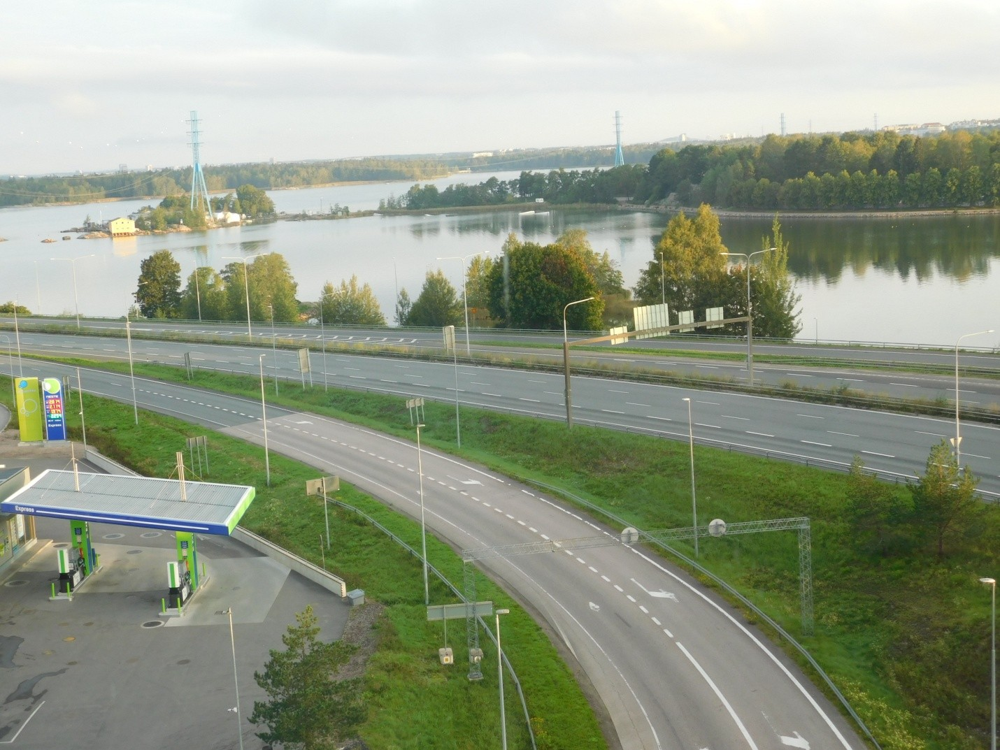
Accommodation was arranged in Holiday Inn. The hotel was good. The room was more spacious. Normally in all these international hotels, we used to find combs, shaving razors, soap, toothpaste, etc. But this time we didn’t see such things in any hotel. Even a water kettle was not kept. Fortunately, Kesari gave this, and it was very handy to prepare tea and coffee every day in the room itself.
From the airport, the hotel was about a 40-minute drive by bus. The bus was so good, absolutely no noise. The city was clean like any other normal European city. Roads are good. North European countries are thinly populated. So we did not see much traffic on the road.
Like trams, here electric buses are there. So electric overhead wires are hanging around. Buses and cars are Left-hand drive. Roads are invariably broad and we never witnessed heavy traffic or traffic jams. But lots of signals, and at times the bus used to stop for a green signal, and we won’t see even a cycle in the vicinity!
At night we took dinner in an Indian Restaurant called Shahi Dera. Close to the hotel where we stayed, there was a big lake surrounded by plenty of trees. The lake and surrounding places were pretty clean. From our room window, the scenery was so beautiful.
09/09/23: Exploring Helsinki
After breakfast, we left Hotel Holiday Inn with our luggage for a city tour. Here people speak the Finnish language, also they speak English. Signboards are in English and Finnish.
Sibelius Monument
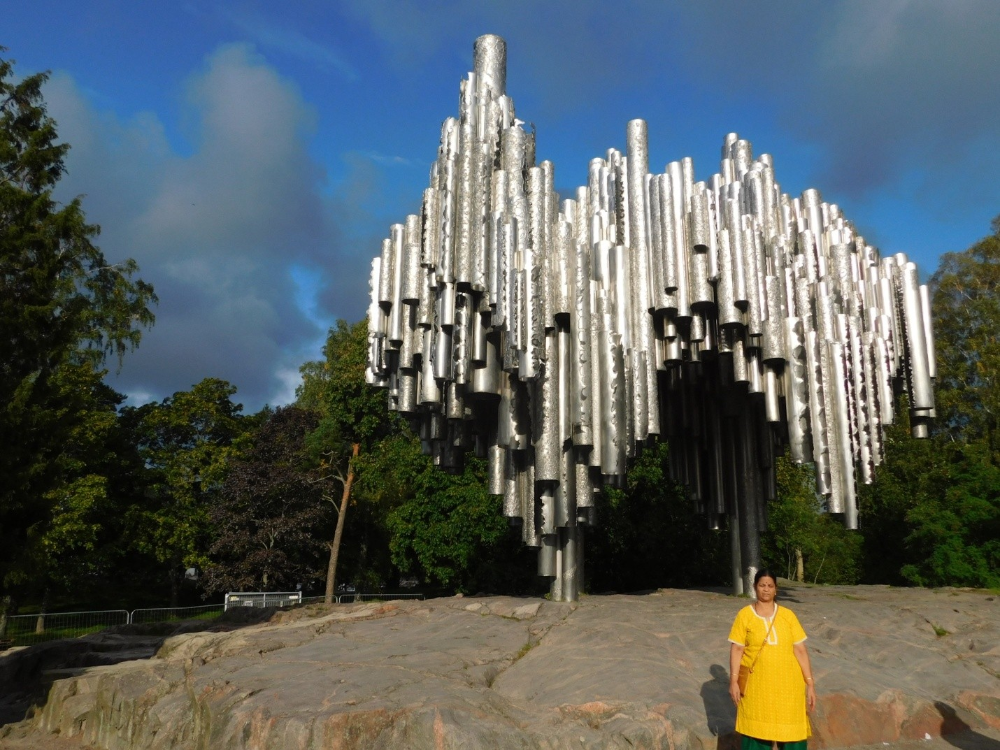
First, we visited the Sibelius great composer monument. The Sibelius Monument is dedicated to the Finnish composer Jean Sibelius (1865–1957). The monument is located in Sibelius Park. Adjacent to this park, there is a lake with plenty of trees surrounding the lake, adding to the beauty of the park.
Rock Church (Temppeliaukio Church)
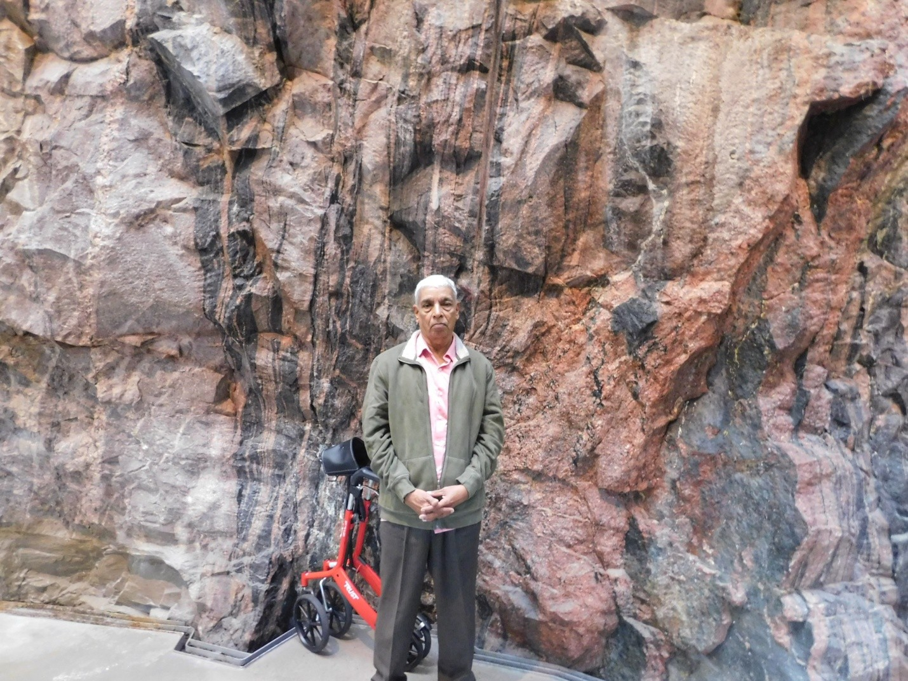
Next, we visited the Rock Church. Temppeliaukio Church, called Rock Church, was designed by architects and brothers Timo and Tuomo in 1969. This church is built directly into solid rock. The roof of this church is made of copper rods. Every church will have a huge Bell. But in this church, no Bell is erected. The ringing sound of the Bell is played through a music system as and when the prayer is conducted.
The City Library & The Washroom Saga
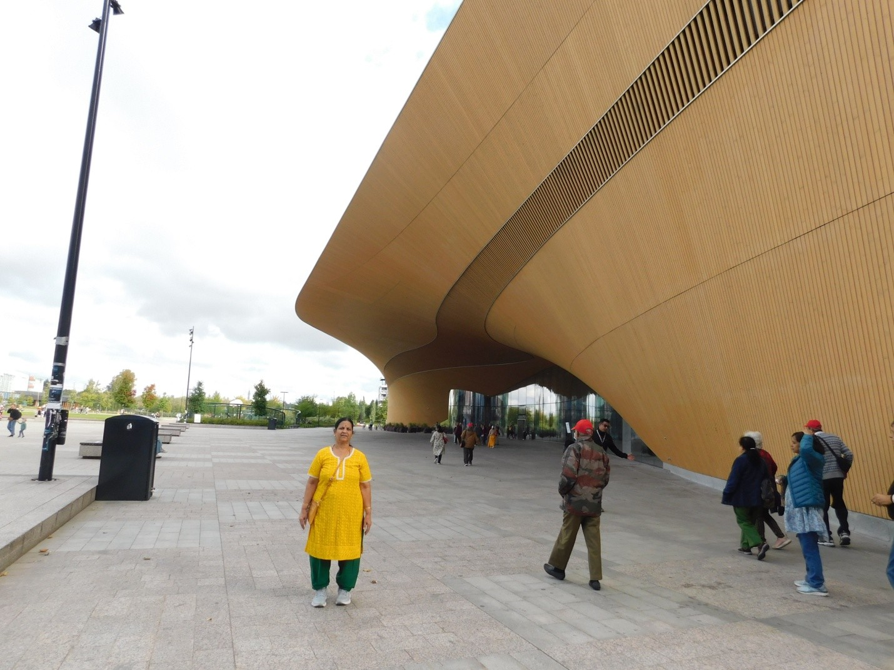
Then we visited the city library. Actually, the purpose of visiting the Library was not just to look at the heaps of books. A big hidden agenda was kept behind this visit by Kesari. That was to avail the free facility of washrooms.
In Europe, finding free washrooms is big torture. Ten years back when we visited we were surprised to see the doors of the washroom would open only if a Euro coin is inserted. Now that is upgraded with a new gadget, all we have to do is insert a debit card, after deducting the money the door will open.
In our group, one genius (?) found a way to overcome this. The first person inserts the card and doors would open, when he comes out, before the door gets closed, the other person will get into the washroom, this will continue till the last person uses it; he will ascertain that no one is left over before leaving the door to get locked.
Even in common places like Railway stations, to use the washroom one has to pay. Fortunately, in the train, it was free! The same scenario was seen in the airports of Helsinki, Bergen, and Copenhagen. Of course, in airports no fee, but we found limited washrooms and we saw people were standing in the queue to use them.
The Library building was in a peculiar shape. Chairs provided there were also different types. If you sit, it is difficult to get out.
Finland is a less populated country. So nowhere we saw a big crowd. Even in common places like bus stops, stations, airports all having a deserted look. We were dropped at Market Square. We roamed around an hour and took photos at the Cathedral of Helsinki.
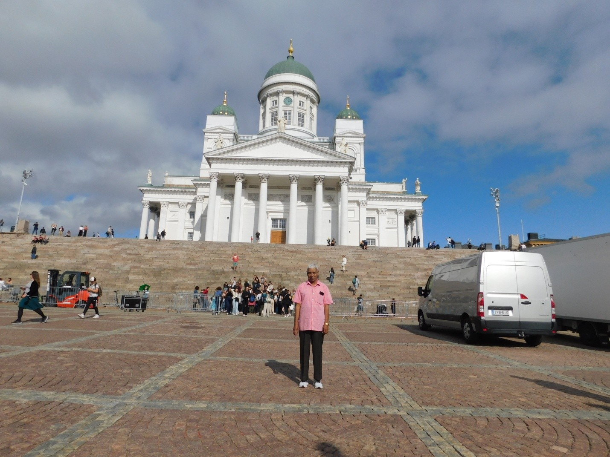
After the market visit, we went by bus to Maharaja Restaurant of Helsinki. Lunch was good. After the lunch, we came to the port to board the cruise. The name of the cruise is Silja Symphony. The cabin allocated to us was on the 9th deck. It was a small cabin with two lower beds and two upper beds. Wi-Fi facility was provided without any additional payment. At 5 pm the cruise started to sail.
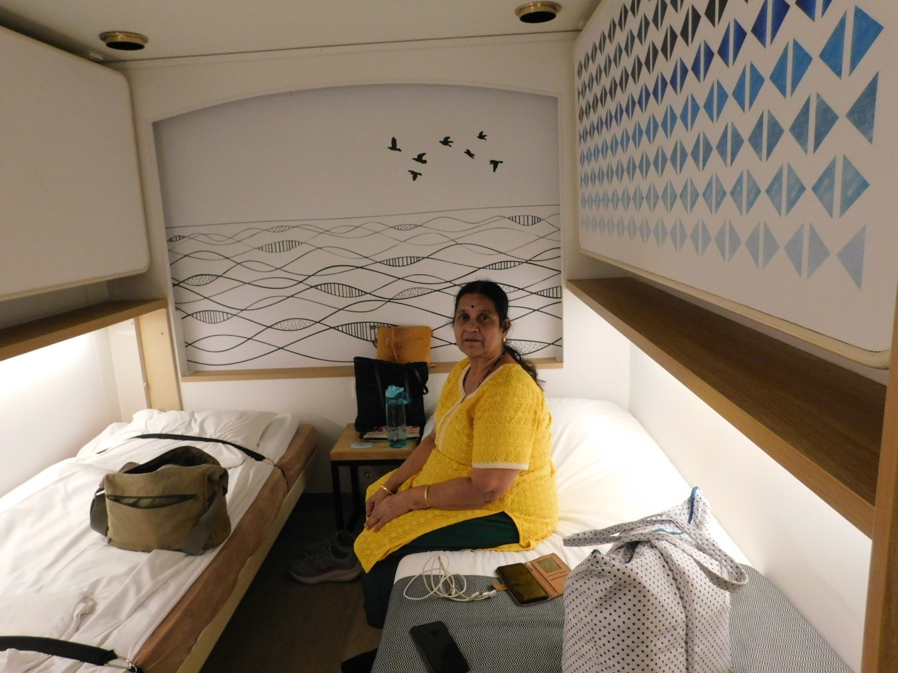
From the upper deck, took some photos. The name of the Sea is the Baltic Sea. It is an overnight journey to Stockholm, Sweden.
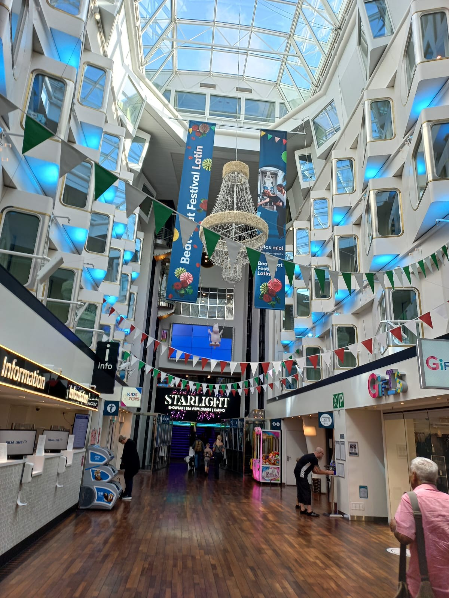
Night dinner in the cruise was a disaster. We made several rounds of the buffet table to find a vegetarian dish. Almost we found all non-vegetarian dishes. At last, we could locate some boiled potatoes, bread, butter, some fruits, and coffee. With that, our cruise dinner was over.
10/09/23: Arrival in Stockholm, Sweden
In the morning we had our breakfast at the cruise. We took Cornflakes with milk, fruits, bread butter, and coffee. We reached Stockholm at 10 am. We got down from the cruise and collected our baggage. We boarded the bus, and a local guide was also waiting for us. The weather was very pleasant and the city looked pretty good.
Vasa Museum
The first visit in Stockholm was the Vasa Museum.
History: The Vasa was a warship built during the reign of King Gustavus Adolphus of Sweden in 1628 when Sweden was at war with Poland. It was built by an experienced shipbuilder called Henrik Hybertsson. The ship was mounted with 64 Guns. On Aug 10, 1628, on its maiden Voyage, the ship tragically sank because of the overweight of the Guns with 300 soldiers. The ship was recovered during the 20th century. The specialty of the ship is hundreds of wooden sculptures are embellished on it.
City Hall
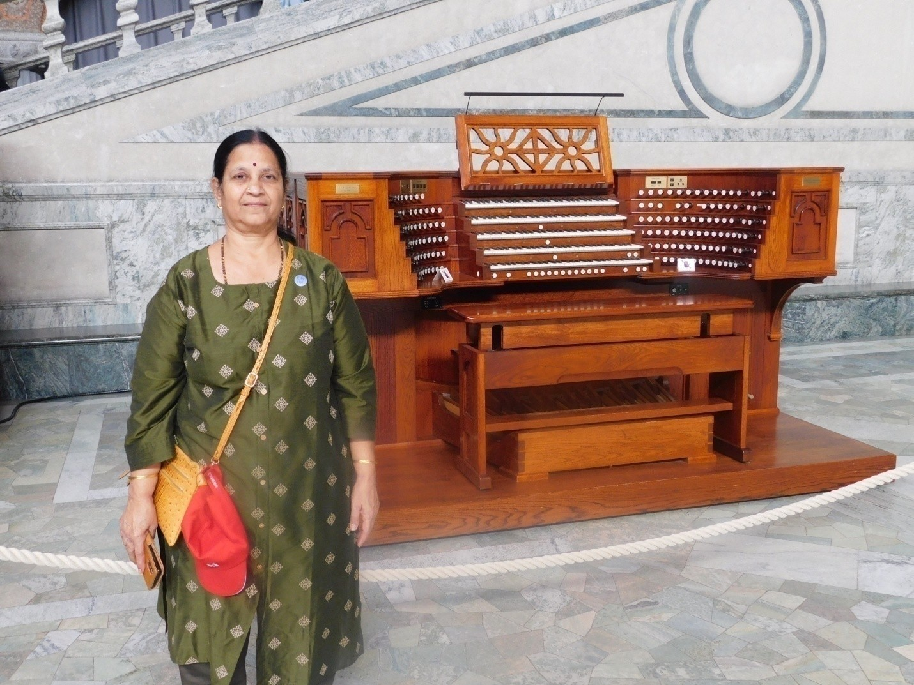
Next, we visited City Hall. The Stockholm City Hall is one of Sweden's most famous buildings, and one of the capital's most visited tourist attractions. It houses offices for 200 people including the Municipal Council, and is also famous for its grand ceremonial halls and unique art pieces. The Stockholm City Hall is the venue of the Nobel Prize banquet held on 10 December each year. Between May and September, the City Hall Tower offers a breathtaking view of Stockholm.
Water Front & Royal Palace
After the city hall, we walked around a marketplace called water front. This is the most beautiful spot in Stockholm. A big lake and the surrounding place is covered by beautiful buildings. We had our lunch at Krishna Restaurant: Lunch was so-so only.
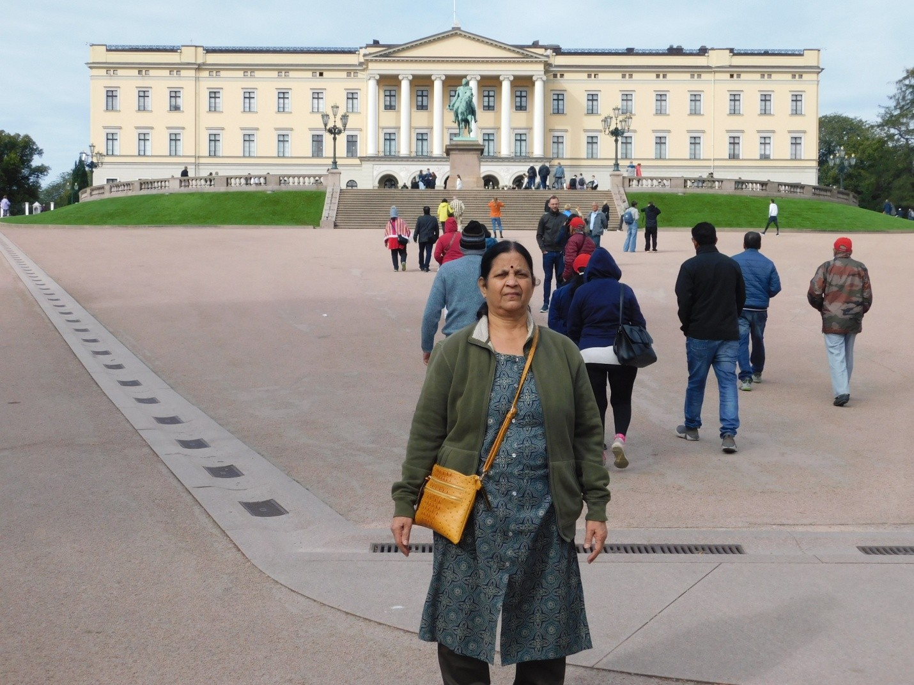
The Royal Palace of Stockholm is one of Europe's largest palaces, with over 600 rooms, and serves as the official residence of the King of Sweden. Here we saw at the entrance of the palace the changing of guards.
Ice Bar
Sweden is a country where 8 months are the winter season. Peak winter temperature goes down to minus 50 C. Ice Bar is a small room of a hotel, which exhibits the scenario of peak winter. The room is maintained below 0C. Some ice sculptures were kept. Before entering the room they provide warm clothes and hand gloves. After the ice bar visit, we spent some time in a coffee shop.
Around 7:30 we had our dinner and our Night stay was arranged in hotel Scandic Victoria Tower, a 34-floor hotel. Inside the lift, the floor switch button was looking like a computer keyboard. The hotel room was spacious and comfortable.
11/09/23: Flight to Bergen, Norway
After the breakfast at Hotel Scandic Tower, we proceeded to Arlanda airport. It was an hour travel. Around 9:45 we reached the airport. The flight was late by an hour. So we finished our packed lunch also.
In the airport check-in process was self-operations. Fed the ticket details and got the luggage tag and boarding pass. Also, we had to drop the baggage in the appropriate counter. The journey to Bergen was about an hour.
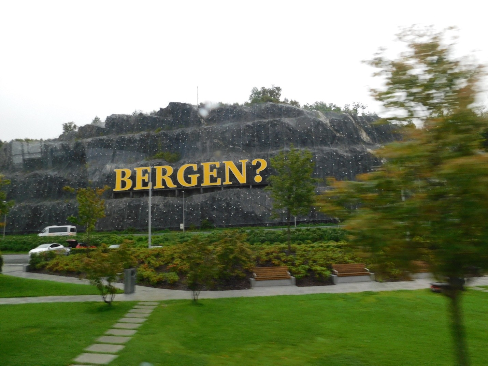
Bergen city of Norway is surrounded by seven peaks. This city is called the rain city. In a year more than 200 days, they have rain. While traveling by bus we saw many long tunnels. This city looks beautiful, full of greenery and waterfalls.
Fisherman Wharf & Mount Floyen
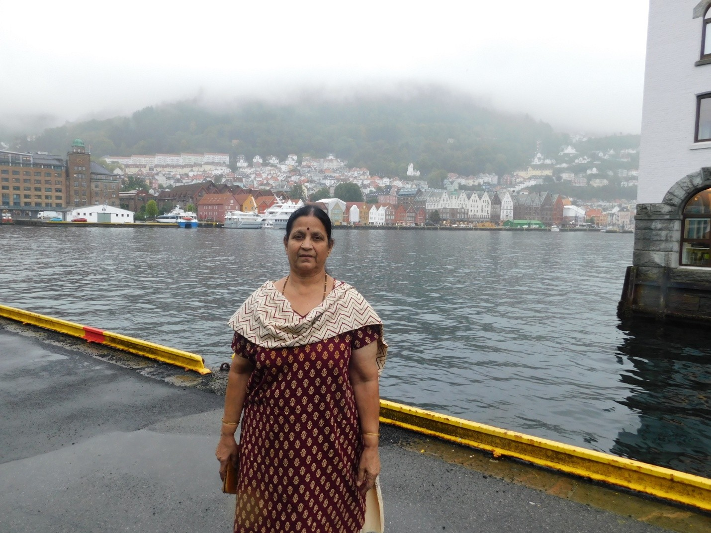
Our first sightseeing spot in this was Fisherman Wharf. Hundreds of years ago, this place in Norway was considered the most important fish trade center in Europe. This place is protected as heritage and all old things which were used by fishermen are protected.
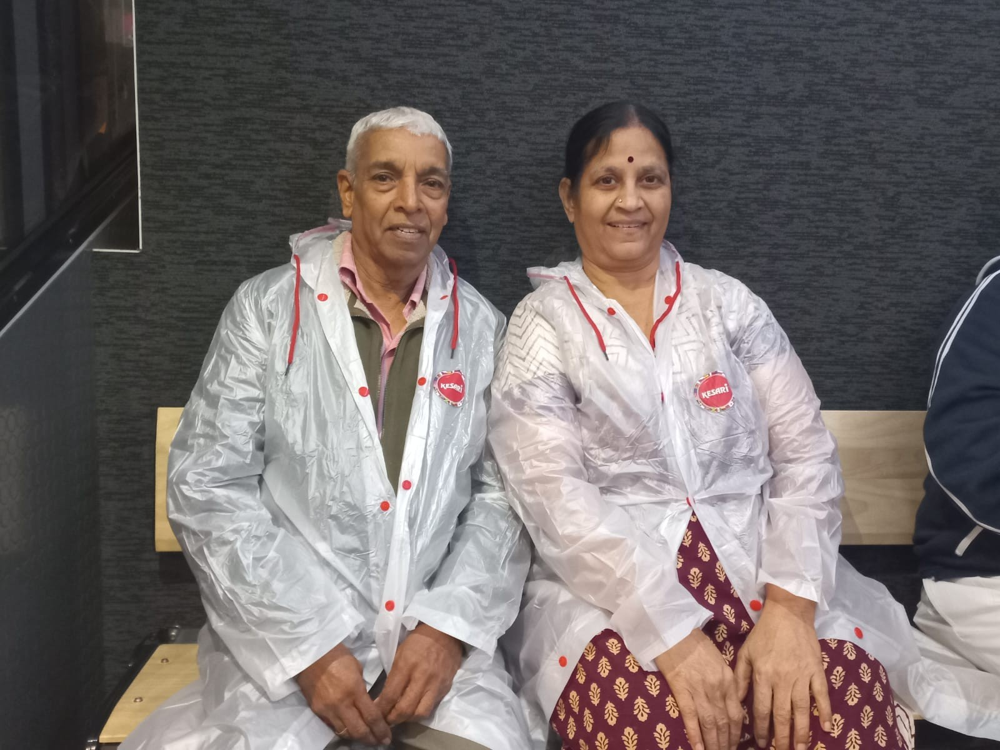
Then we visited Mount Floyen. This is the mountain peak about 400 meters above sea level. We went to the peak by Funicular Tram. It is a kind of winch that moves over the rail track over the mountain slope. It was told that from the mountain peak we can have a beautiful view of Bergen city. But being a cloudy day we could not see anything from the peak. In that cloudy weather with raincoats, we roamed around for some time and returned back to the point by the same Funicular Tram using the return ticket.
Then we returned back to the city and had dinner at Maharaja hotel. Food was good. The night stay was at Hotel Augustin, Bergen, Norway. This hotel is in the heart of the city Bergen. Rooms are very small. Of course, the stay was just overnight.
12/09/23: The Scenic Train Journey
That day's plan was to move from Bergen to Gudvangen by bus (about 3 hrs journey), then to move from there to Flam by ferry and from Flam to Myrdal by the famous scenic train which was the highlight of the tour.
As planned after breakfast we got into the bus and started moving towards Gudvangen. Entire Norway is blessed by Nature. Everywhere we saw full of greenery and waterfalls and lakes. The journey was very pleasant. After an hour travel, because of some landslide we were unable to proceed and had to change our original plan. We came up to Voss and from there we went by train directly to Myrdal.
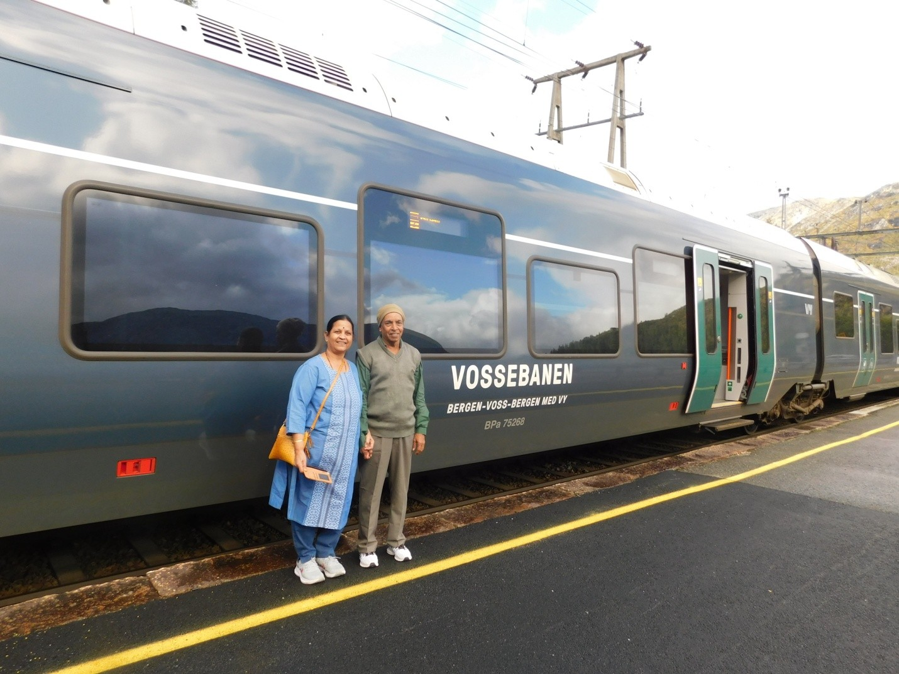
But we did not want to miss the scenic train journey. So we went to Flam from Myrdal by the famous scenic train and again returned back to Myrdal after spending an hour at Flam. We reached Flam around 1:30 pm and spent till 3:30 pm there. In Flam Railway station there was a railway museum also. The journey from Myrdal to Flam is 45 minutes.
We were lucky that the climate was good. There was no rain or clouds. So the 45 minutes journey was memorable. In between on the way there was a wonderful waterfall. The train was stopped there for a few minutes for taking photographs. Onward and return journeys were most memorable in this trip.
From Myrdal, we went to Geilo by another train. It was an hour journey. From there to hotel Ustedalen we went by bus. We reached the hotel around 6:30. Geilo is a very small town and we could not get any Indian restaurant. In Ustedalen hotel we took dinner. Vegetarian dinner consists of a vegetable soup with a few slices of bread. The climate was quite chill and hotel surroundings were so beautiful with mountains.
13/09/23: Journey to Oslo
Morning we had usual breakfast bread, cornflakes, and coffee. After breakfast around 9 am we started to proceed to Oslo. It is 220 km away from Geilo. We travelled about 4 hrs. We reached Oslo around 2 pm. We had lunch at a Punjabi hotel, and the food was good. Oslo is the capital city of Norway.
Opera House & Ski Jump
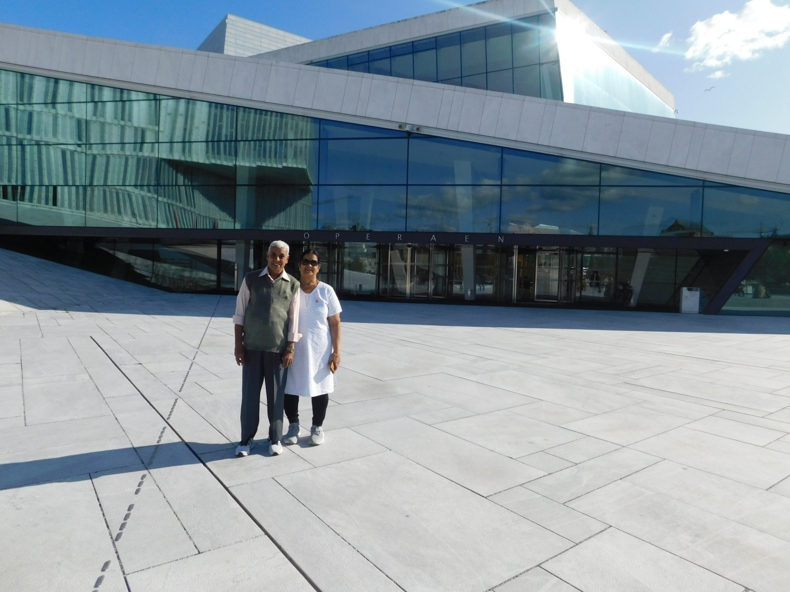
An amazing opera house designed by the Norwegian Snohetta architects was finished in 2008. It has really added a new dimension to Oslo, and has become one of the most popular tourist attractions in Norway.
Then we proceeded to Sky Jump tower. It is one of the most popular tourist attractions in Norway. We can reach the top of the Tower through a winch and from there we can see the panoramic view of the city.
Sculpture Park
The sculpture park is Gustav Vigeland's life work, comprising over 200 sculptures in granite, bronze, and wrought iron. It was installed mainly in the period 1940-1949.
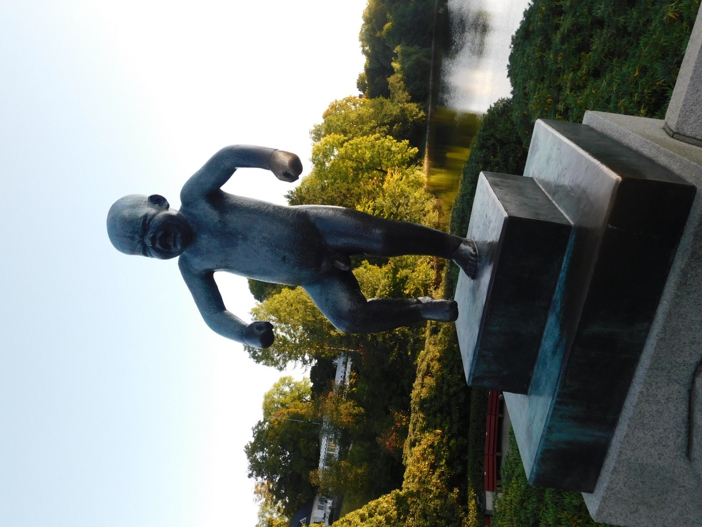
Here the angry child sculpture is very popular. In this garden, I was surprised to see a statue of 12 rasi.
We had dinner at Hotel Gandhi 1947. And night we stayed in Hotel Grand Central, Oslo.
14/09/23: Museums & Cruise to Denmark
We left the hotel after breakfast. We proceeded to Kon-Tiki Museum. This museum exhibits the famous explorer Thor Heyerdahl’s achievements. In 1947 he crossed the Pacific Ocean on the balsawood raft Kon-Tiki. We can see models of rafts he used in this museum. His statue in the museum looks like a real person sitting.
Town Hall & Royal Palace
After the museum, we proceeded to Town Hall. Our Bus was parked in the allocated area and we walked to Town Hall. In the pleasant weather walking on the clean road with lots of flowering plants on both sides was really pleasant. This Town Hall of Oslo is used for awarding the Nobel Prize for Peace every year on 10th December. Mother Theresa was awarded the Nobel Prize in this Hall only.
Then we walked to the Royal Palace. About 15 minutes walk from the Town Hall. The Royal Palace is one of the country’s most important buildings and a concrete symbol of the course of Norwegian history since 1814.
After seeing the palace from outside, we walked to the bus parking place and boarded the bus for going to Indian Restaurant, Kashi. We had tasty typical Indian food, roti, Aloo subji, palak paneer, and kadi with kichidi. Gulab jamun sweet was also delicious.
In Norway, we spent more days and saw more cities. We saw Bergen, Voss, Flam, Myrdal, Gudvangen, Geilo, Oslo. As per our trip schedule, from Oslo the capital of Norway, we proceeded to Copenhagen the capital city of Denmark by Cruise. This is also an overnight Journey.
So after our lunch, we proceeded to DFDS Port to board DFDS cruise. The same bus was also parked in the cruise with our baggage. Only minimum needed things for a day, we took with us in the cruise.
We were accommodated in the 5th Deck. Just like other cruises we traveled, the cabin had two lower beds and two upper and a washroom. Here free Wi-Fi was not provided. The cruise started to sail to Copenhagen, Denmark. It was scheduled to reach Copenhagen next day morning 10 O'clock. In the cruise, we purchased a few fridge magnet displays.
15/09/23: Copenhagen, Denmark
Actually, on the 14th midnight, we roamed around the upper deck to see the midnight sun. But we didn't see any sun. Only our sleep got disrupted.
Morning we got up around 6 and got ready around 8 am. We went to Seven Seas restaurant to take our breakfast. We had Cornflakes, milk, roasted bread, and coffee. Got ready around 9:30 to leave the cruise. We happened to see a Korean wearing a very similar shirt to what I wore. He wanted to take a photo with me.
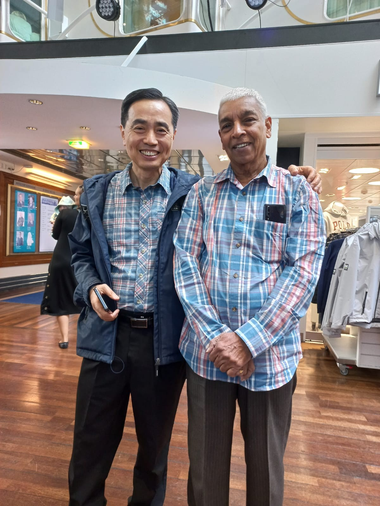
After we got down from the cruise, in the same bus we boarded again and a local guide was also with us.
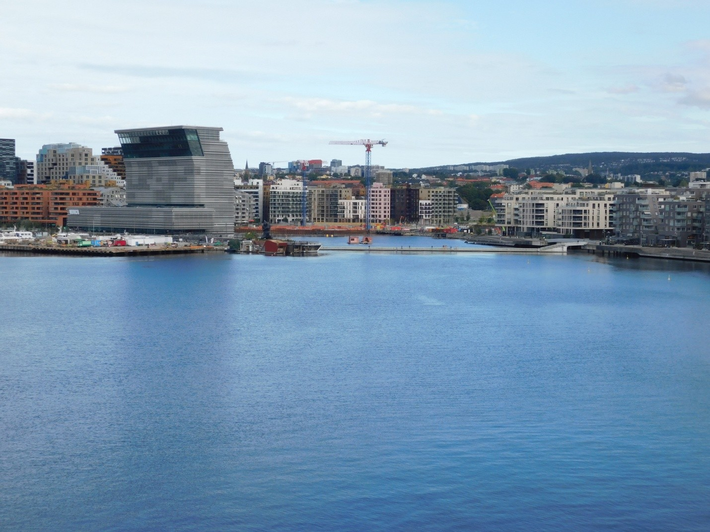
Copenhagen, the capital city of Denmark looks good. The weather was quite chill and we had to wear some woolen clothes.
The Little Mermaid & Gefion Fountain
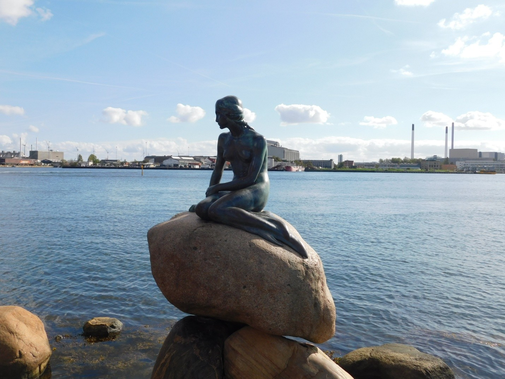
The Little Mermaid Statue: The Little Mermaid is one of H.C. Andersen's most beautiful and touching fairy tales. Sculptor Edvard Eriksen depicted this bronze sculpture on a rock by the waterside at Langelinie promenade. This statue is one of the most popular tourist attractions in Copenhagen.
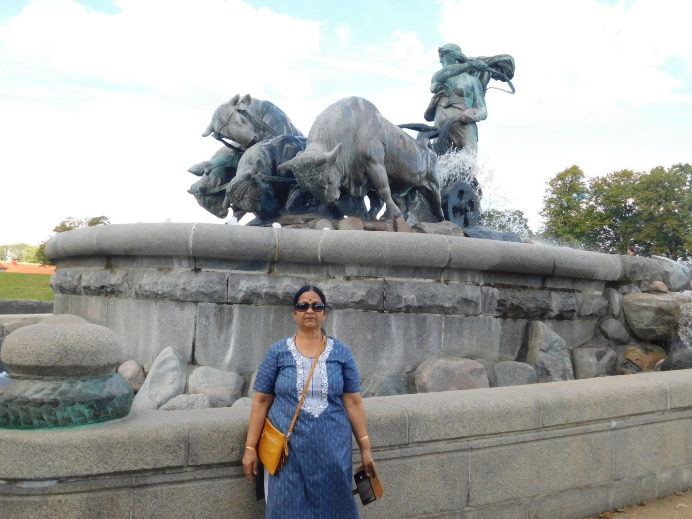
Gefion Fountain: It is a large fountain on the harbor front in Copenhagen. It features a group of oxen pulling a plow and being driven by the Norse Goddess.
Christiansborg Palace
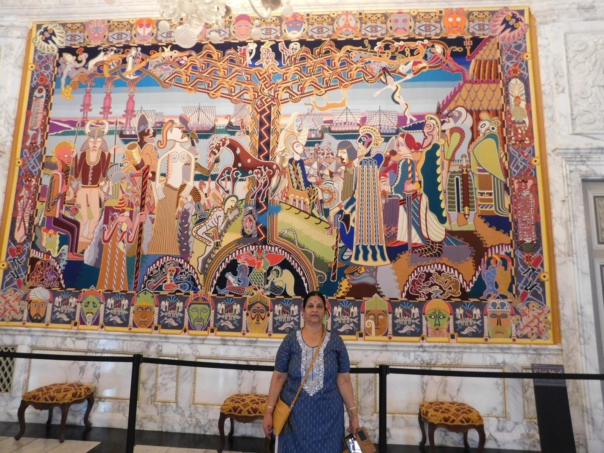
This palace has an 800-year-long history as Denmark’s center of power. This palace was reconstructed after a major fire accident. Still, some of the old paintings which were recovered after the fire are decorating this palace. At present, this palace is used by the queen of Denmark for official functions and she stays in a different place. A major portion of this palace is open for the public to see.
Just opposite this palace, the Parliament building is situated. After the visit to the palace, we went to an Indian restaurant called Deep, owned by a Punjabi. Food was good.
In Denmark, like the Netherlands, a large number of people use cycles for their day-to-day work. Cars are seen in fewer numbers. Bikes or scooters are not seen on the road.
Tivoli Gardens
It is just like Disneyland. Lots of thrilling games and different shows were there. We roamed around inside for about two hours.
After Tivoli Gardens, we went to hotel Scandic Copenhagen where accommodation was booked. The hotel was good. In front of the hotel, there was a lake and around the lake, a beautiful footpath was provided for walking around. Night we took dinner in Indian restaurant Deep.
16/09/23: The Return Journey
Morning around 6 O’clock we got up. Took breakfast by 7 and left the hotel by 8. Flight was by 12:30 to Helsinki, Finland. Airport was 20 minutes travel from the hotel. After reaching the airport, we had to do self-check-in. Mine was done without any problem. But Lakshmi's passport gave a problem while scanning. We had to go to the counter, there also while scanning it didn't accept. Manually she entered and at last we got the boarding pass. Travel duration was about an hour.
Flight departed at the right time. Reached Delhi before the scheduled time. After arrival, immigration was done. Tickets were booked in Indian Airlines from Delhi to Mumbai. Though we boarded at the right time, the flight was delayed due to refueling. We arrived in Mumbai around 1 pm and took a cab and reached home around 6 pm.
"From the silent, electric streets of Helsinki to the majestic fjords of Norway, this journey through Scandinavia was a lesson in harmony with nature. We witnessed the grandeur of the Vasa ship, the breathtaking beauty of the Flam railway, and the peaceful charm of Copenhagen. The clean air, the disciplined traffic, and the midnight sun (even if we missed it!) left a lasting impression. These memories of the North will remain frozen in our hearts forever."